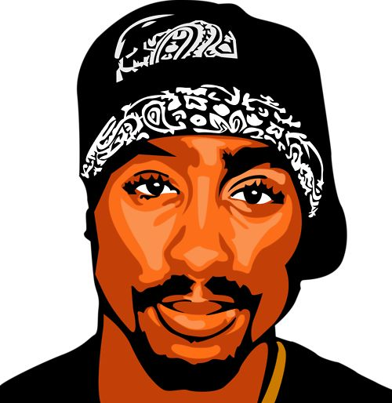

Welcome
What can a rose growing through concrete teach us?
Imagine seeing a rose growing through a crack in a sidewalk. It shouldn't be there. Yet somehow, it grows.
What might a rose like this represent?
There isn't just one way to think about the image. In this lesson, you'll explore how Tupac uses a rose to communicate a larger idea.
Learning goal
By the end of this lesson, you will be able to explain what a poem means on the surface and what deeper message it may communicate — by looking at the speaker, subject, descriptive language, and symbols.
Background
Meet Tupac

Tupac Shakur was a rapper, actor, and poet. His writing often explored ideas such as identity, struggle, dreams, inequality, and resilience. He also wrote poetry, including "The Rose That Grew From Concrete."
What is true about Tupac?
The Poem
Read the Poem
concrete
Concrete is a hard building material used for things like sidewalks, roads, and buildings.
Which word means something similar to concrete?
The Rose That Grew From Concrete
Press play to hear the poem read aloud. The full text is always available below.
Did you hear about the rose that grew
from a crack in the concrete?
Proving nature's laws wrong
it learned 2 walk without having feet.
Funny it seems, but by keeping its dreams,
it learned 2 breathe fresh air.
Long live the rose that grew from concrete
when no one else even cared!
As you read, think about:
- Who is speaking?
- What are they talking about?
- What does the speaker tell us about it?
Literal Meaning · Speaker
Who Is Speaking?
In poetry, the speaker is the voice telling us the words. The speaker is not always the poet.
"Did you hear about the rose that grew
from a crack in the concrete?"
Who is the speaker?
Literal Meaning · Subject
What Is the Speaker Talking About?
The subject is the person, place, thing, or idea that a text is mainly about.
What is the main subject of the poem?
Now we know who is speaking and what they're talking about. Let's look at what the speaker actually says about the subject.
Gathering Evidence
Become a Poetry Detective
We know the speaker and the subject. Now look for clues about what the speaker says about the rose. Click the words and phrases that tell you something important.
?
it
.
Funny it seems, but by
,
it .
!
You found the clues. The speaker describes a rose that continues to grow and survive even though its surroundings make survival difficult.
Synthesis
Put the Clues Together
Literal meaning is what is happening on the surface of the poem.
Which statement best describes the literal meaning of the poem?
Literal Meaning
The speaker is: —
The speaker is talking about: —
But is the poem only about a rose?
Deeper Meaning · Symbol
Look Beneath the Surface
A poem can describe something real while also using it to represent a bigger idea. A symbol is something that represents a larger idea.
What might the rose represent?
Return to the poem
Which phrases support the idea that the rose could represent someone overcoming obstacles?
?
it
.
Funny it seems, but by
,
it .
!
Reflect
Why might a person be compared to a rose growing through concrete? Select any that resonate with you.
Deeper Meaning
What's the Bigger Idea?
- The rose grows through concrete.
- The rose survives obstacles.
- The rose continues to grow.
- The speaker admires the rose.
If the rose represents a person, what might the poem be saying about that person?
Which idea best captures the poem's deeper meaning?
Deeper Meaning
The author's message is:
Tupac connection
Tupac's writing often explored struggle, dreams, identity, and resilience. How might those ideas connect to a rose growing through concrete?
Please write at least one complete sentence before continuing.
Synthesis
What's the Central Idea?
You've identified the speaker, the subject, the evidence, and the symbol. Now put everything together. Refer back to the text as you answer below.
The Rose That Grew From Concrete
Did you hear about the rose that grew
from a crack in the concrete?
Proving nature's laws wrong
it learned 2 walk without having feet.
Funny it seems, but by keeping its dreams,
it learned 2 breathe fresh air.
Long live the rose that grew from concrete
when no one else even cared!
Literal Meaning
Deeper Meaning
Now write at least three sentences explaining the central idea of "The Rose That Grew From Concrete." Use at least one detail from the poem to support your thinking.
Check Your Thinking
A strong response should:
- Identify what the poem is mainly about.
- Explain what the rose may represent.
- Describe the poem's larger message.
- Use a detail from the poem as evidence.
See an example response
The poem's central idea is that people can overcome difficult circumstances and continue to grow. The rose represents someone who succeeds despite obstacles, growing through a crack in the concrete when no one else even cared. That kind of quiet determination shows that struggle doesn't have to stop someone from blooming.
You Did It!
You moved from what happens in the poem to what the poem means.